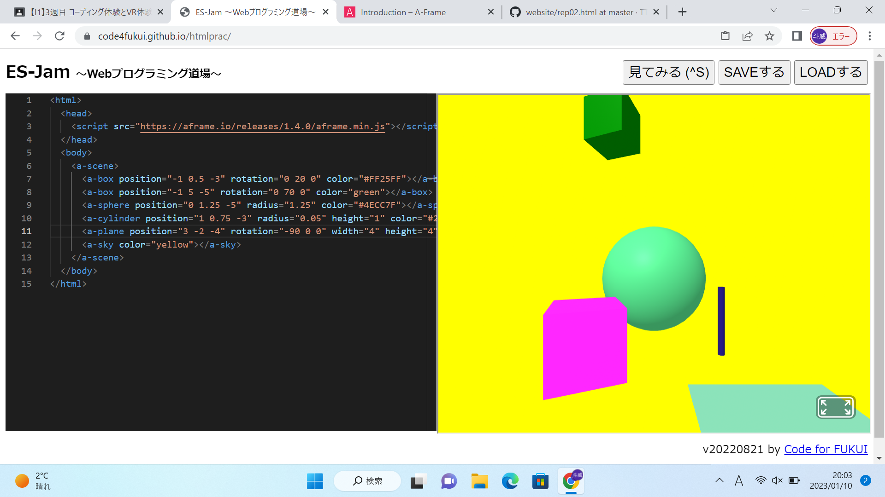
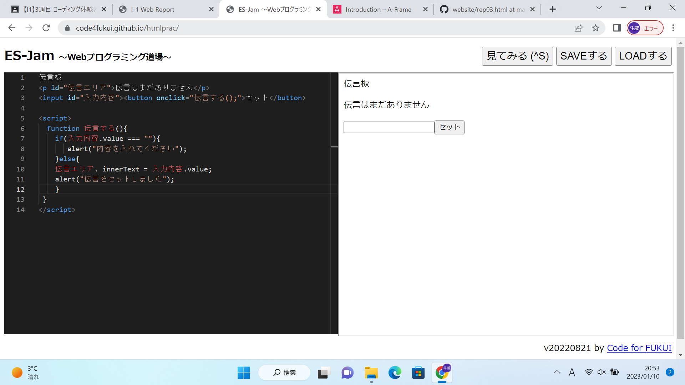

第3週目
3-1 JavaScript体験：VR空間を作る

3次元モデル
1.内容
ES-jamというプログラミングを作れるサイトに，A-Frameというサイトからプログラミングのベースをコピー＆ペーストをして，そこから編集して自分の好きな3Dモデルを作った．
2.感想
プログラムのベース自体はコピーしただけなので，そこまで難しくなかったです．それぞれのブロックの詳細もclolrみたいに分かりやすい英単語だったのですぐに理解でき，編集
もできました．
3-2 JavaScript体験：伝言プログラムを作る

伝言板
1.内容
3-1とは違って最初のなにもない状態からプログラムを作り，セットのところに文字を打つと反映されるミニアプリを作った．
2.感想
スライドを見ながら進めたからできたけど，かっこの中の英単語が何を表しているのかがあまり分からなかったです．半角スペースを使って行をずらす意味も分からなかったので，
意味を理解しながら作るとなるとかなり難易度が上がってくるなと思いました．
3-3 JavaScriptプログラムの３次元空間の体験
1.内容
VRゴーグルをつけて3次元空間に入って，移動したりボールを飛ばしたりした．
2.感想
自分の打ちたい方向にボールを飛ばせたりしたのでFPSゲームみたいだなと思いました．
僕の目が悪いせいか，文字のピントが合いずらいなと感じました．